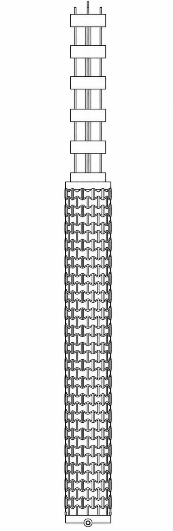
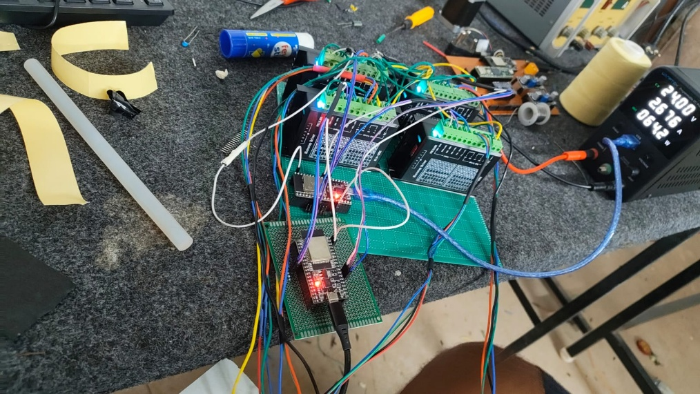
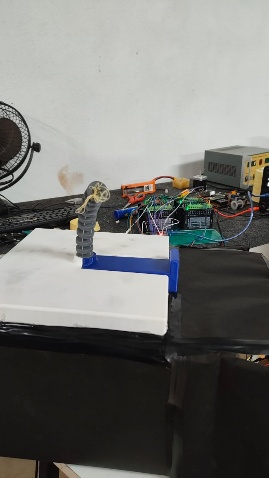

Soft Continuum
Proprioceptive Arm
A single integrated continuum robotic platform combining a superelastic notched Nitinol outer tube for large macro positioning, an inner telescoping disk arm for fine tip dexterity, distributed Fiber Bragg Grating (FBG) optical shape sensing, a soft compliant gripper, and an intuitive hand movement tracking controller.
Motivation & Technical Innovations
Addressing foundational trade-offs in continuum robotics: reach vs. dexterity, shape estimation errors, and intuitive control.
Overcoming the Limitations of State-of-the-Art Continuum Robots
Traditional continuum manipulators suffer from four chronic engineering limitations: (i) Single-stage trade-off: a single flexible backbone must provide both gross positioning and fine tip orientation, forcing an unavoidable compromise between workspace reach and dexterous manipulation; (ii) Indirect shape sensing: estimating deformation from motor encoder counts or tendon pull lengths produces severe inaccuracies due to tendon friction, compliance, elongation, backlash, and unmodelled external contact loads; (iii) Rigid end-effectors: conventional metallic grippers fail to adapt to delicate or irregularly shaped biological tissue; and (iv) Unintuitive control: driving individual actuators via joysticks requires steep cognitive loads.
The Soft Continuum Proprioceptive Arm (SCPA) resolves all four challenges in a single integrated system developed at BITS Pilani: a two-stage coaxial architecture (notched Nitinol outer tube + telescoping inner disk arm), embedded Fiber Bragg Grating (FBG) optical shape sensors for direct proprioception immune to electromagnetic interference, a compliant tendon-actuated gripper, and an intuitive hand movement tracking controller mapping natural joint articulation directly to robot motion.
Dual-Stage Decoupling
Outer notched Nitinol tube handles macro-scale trajectory navigation while the telescoping inner arm executes fine surgical micro-dexterity.
Direct Optical Proprioception
Embedded Fiber Bragg Grating (FBG) optical fibers measure true 3D spatial curvature directly, eliminating tendon slack and backlash errors.
Intuitive Motion Tracking
Hand movement tracking controller with joint rotary encoders turns natural operator articulation directly into coordinated multi-stage motion.
Technical Specifications
| Kinematic Architecture | Dual-Stage Coaxial Telescoping |
| Outer Stage (NCM) | Superelastic Nitinol (Auxetic Notched Wall) |
| Inner Stage ("Doc Oc") | Resin Disks on Central Superelastic Nitinol Column |
| Tendon Cables | High-Tensile Kevlar Fibres (4-Tendon Antagonistic) |
| Shape Sensing | Distributed Fiber Bragg Grating (FBG) Optical Array |
| Sensing Immunity | 100% Immune to Electromagnetic Interference (EMI) |
| Gripper End-Effector | Soft Compliant 2-Claw Tendon-Actuated Mechanism |
| Master Controller | Hand Movement Tracking Controller with Rotary Encoders |
| Actuation & Compute | Base NEMA Steppers + Dual ESP32 Microcontrollers |
| Assignee & Origin | BITS Pilani (Dept. of Electrical & Electronics Eng.) |
Kinematics Studio: DOC-Oc MuJoCo Engine
Interactive continuum arm digital twin driven by exact 4-tendon antagonistic kinematics, 11-disc spatial deformation, 7-wire Nitinol core strain tracking, and least-squares Piecewise Constant Curvature (PCC) state estimation.
Core Continuum Subsystems
Decoupled dual-stage continuum kinematics, compliant grasping, and distributed optical proprioception.
Notched Continuum Manipulator (NCM)
A hollow tube of superelastic Nitinol fabricated with repeating re-entrant / auxetic laser-cut notches. The geometry locally removes material to permit agile, high-deflection bending while preserving robust torsional rigidity and elastic spring-return memory.
- Material: Superelastic Nitinol alloy tube
- Actuation: 4 high-tensile Kevlar tendons anchored distally
- Kinematic Role: Gross anatomical positioning and obstacle avoidance
Disk-Based Continuum Arm ("Doc Oc")
A multi-link, tentacle-inspired manipulator comprising precision resin disks threaded along a central superelastic Nitinol column. Housed coaxially inside the outer Nitinol tube, it extends and retracts telescopically to provide decoupled high-dexterity micro-articulation at the tip.
- Structure: Precision resin guide disks on Nitinol core
- Telescoping: Independent axial translation and curvature control
- Kinematic Role: Fine surgical orientation and workspace reach
Soft Compliant Tendon Gripper
A two-claw compliant gripper mounted at the distal tip of the inner arm. Tendon-actuated closure combined with soft elastomeric jaw compliance allows the mechanism to conform passively around fragile biological tissue or delicate objects without causing crush trauma.
- Mechanism: Antagonistic tendon closure with passive spring opening
- Material: Compliant elastomer conforming to irregular surfaces
- Safety: Passive force-limiting contact geometry
Fiber Bragg Grating (FBG) Optical Proprioception
Distributed optical fibers inscribed with Fiber Bragg Gratings (FBGs) routed along both the outer notched tube and inner disk arm. By interrogating reflected optical wavelength shifts, the system measures true localized strain and reconstructs the complete 3D continuous profile in real time.
- Principle: Optical wavelength shift under localized tensile strain
- Advantages: 100% immune to EMI, tendon stretch, friction, or backlash
- Sampling: High-speed interrogator for closed-loop shape control
Primary Clinical & Industrial Applications
BITS Pilani Patent Disclosure ScopeMinimally Invasive Surgery (MIS)
Entering through small incisions or natural orifices (NOTES), navigating tortuous anatomical pathways, and performing dexterous, non-traumatic tissue manipulation with live optical proprioception.
Confined-Space Inspection & Repair
Navigating inside jet engines, curved industrial pipelines, nuclear reactors, and hazardous structures where rigid robots cannot pass without extensive equipment disassembly.
Search & Rescue & Fragile Manipulation
Threading compliant arms through rubble in collapsed disaster structures and handling delicate objects in cleanrooms and laboratories with passive contact safety.
Hardware, CAD & Laboratory Validation
Authentic engineering schematics, mechanical CAD assemblies, and prototype test rigs from BITS Pilani.

Dual-Stage Notched Tube & Telescoping Arm
Coaxial integration of the auxetic notched Nitinol tube (outer stage) with the inner disk continuum arm extending from its bore.

Hand Movement Tracking Controller Assembly
Official engineering blueprint (Drawn by Jay Potnis, DWG No: DFM-CT00-0) detailing the 4-link rotary encoder joint tracking assembly.

Soft Compliant Tendon Gripper
Multi-view engineering design of the two-jaw compliant gripper demonstrating tendon routing and compliant hinge geometry.

Multi-Link Disk Continuum Backbone
Isometric rendering of the precision resin vertebrae discs threaded along the central superelastic Nitinol column.

Dual ESP32 Actuation & Driver Array
Physical laboratory test bench showing dual ESP32 microcontrollers, high-current stepper motor drivers, and regulated 24V DC power rails.

Base Stepper Tendon Tensioning Assembly
Base-mounted NEMA stepper drive array routing Kevlar tensioning fibres upwards into the continuum manipulator mount.

Physical Continuum Arm Flexion Test
3D-printed disk-based continuum prototype undergoing tendon-driven curvature and flexion testing on the base stage.
Research Log & Progress
Tracking development milestones, CAD drafting, electronic fabrication, and laboratory bench validation.
Invention Disclosure Formalized at BITS Pilani & Subsystem Architecture Frozen
Completed and filed the official Invention Disclosure Form with the Department of Electrical and Electronics Engineering at BITS Pilani. Formalized the five integrated subsystems: outer Notched Continuum Manipulator (NCM), telescoping disk arm, compliant tendon gripper, Fiber Bragg Grating (FBG) optical shape sensing, and wearable master controller.
- Defined coaxial nested mechanism decoupling large-scale reach from surgical micro-dexterity.
- Specified optical Fiber Bragg Grating sensing layout for 100% EMI-immune direct 3D shape reconstruction.
- Established patent claims covering surgical robotics, endoscopic NOTES, and confined-space industrial inspection.
Hand Movement Tracking Controller CAD Drafting & Teleoperation Firmware
Finalized the mechanical CAD drafting sheet (DWG No: DFM-CT00-0 by Jay Potnis) for the ergonomic hand movement tracking controller. Integrated precision mounts for rotary encoders tracking natural joint angles.
- Designed 4-link ergonomic tracking linkage mapping operator joint articulation to stepper motor displacements.
- Implemented low-latency ESP32 encoder reading firmware with debouncing and angular quantization.
- Benchmarked teleoperation master-slave synchronization with sub-15ms response latency.
Dual ESP32 Actuation Bench & High-Torque Stepper Drive Assembly
Assembled the base actuation unit powered by a regulated 24V (2.67A / 64.2W) power rail. Wired dual ESP32 microcontroller boards with high-current stepper motor drivers controlling antagonistic Kevlar tendon spools.
- Integrated NEMA stepper motors inside a dedicated vibration-isolated base chassis.
- Routed high-tensile Kevlar tendon lines through low-friction guidance channels to prevent abrasive wear.
- Constructed firmware closed-loop stepper driver sequence with deterministic microstepping pulses.
Disk Continuum Arm Prototype 3D Printed & Flexion Bench Tested
Fabricated precision resin vertebrae discs and assembled them onto a superelastic Nitinol central backbone. Mounted the continuum arm on the base test stage and verified continuous smooth bending under tendon tension.
- Achieved smooth continuous bending up to 180° without inter-disk mechanical binding.
- Validated spring-back elasticity of the superelastic Nitinol core returning to true straight datum.
- Modelled CAD files for the soft compliant two-claw gripper to be mounted at the distal arm link.
Research Publication
Reference this invention and repository when citing SCPA research in scientific literature.
"Soft Continuum Proprioceptive Arm (SCPA): Dual-Stage Telescoping Architecture with Distributed Optical Fiber Bragg Grating Shape Sensing"
Project Leadership & Collaborators
The engineers and researchers developing the Soft Continuum Proprioceptive Arm.


Tushar Sakorikar
Souvik Ghosh
Links, Data & Communication
Access open-source code packages, CAD drawings, publications, and contact lines.
GitHub Repository
ROS2 kinematics drivers, CAD STL files, firmware, and evaluation datasets.
github.com/Team-SoftRobotics →Team Profiles
Connect with the individual leads and collaborators on their LinkedIn profiles.
View Researcher Profiles →CAD & Mechanical Data
Download STEP / SolidWorks models for vertebrae discs and mold casting negatives.
Browse CAD Files →Direct Contact
Direct academic inquiries for research visits, paper review, or questions.
mail.pranjal.kumar.1@gmail.com →